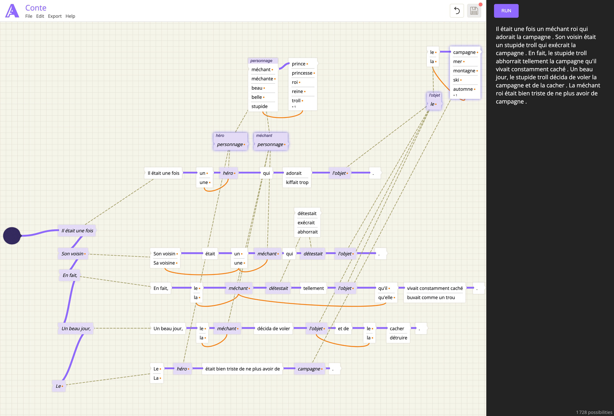

Before LLMs, generating text required real effort. I'd been making generative art projects — poems, joke-telling bots and twitter bots — through increasingly painful scripts. Each project meant hand-coding probability tables, word lists, branching logic. It worked, barely, and the results were charming in a lo-fi way. But the scripts were brittle and impossible to share with anyone who couldn't read code.
A conversation with Cécile Lefèvre, who tought French, gave me a new idea: she described something very similar in the context of learning language, where students could understand the relation of words through visual coding. What if building a generative text piece felt more like drawing a diagram?
Automotron is a node graph editor where each node produces a word or piece of text, and you connect them to form sentences. The hard part was grammar: unlike English, French adjectives have to agree in gender and number with the nouns they modify. So Automotron includes a way to declare agreement rules — a node can adapt its output depending on what it's connected to.
The project became mostly irrelevant once LLMs arrived. But I still think the visual, explicit approach had something going for it: you could see exactly how the text was built, and the results were fully deterministic. No hallucinations.